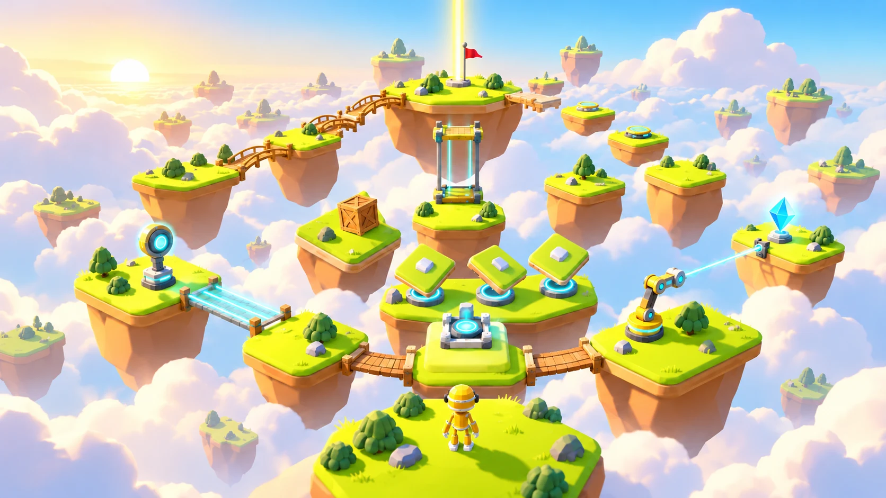
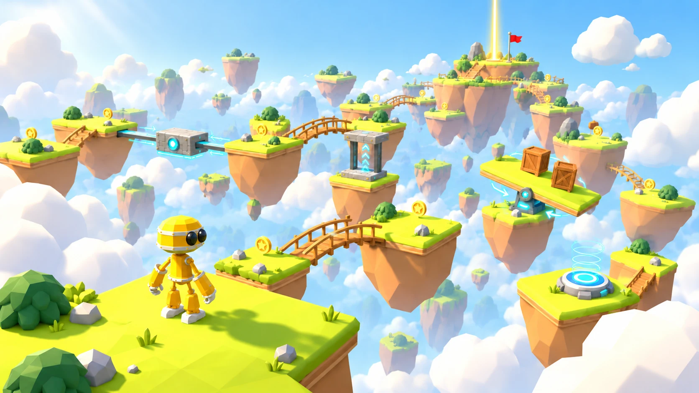
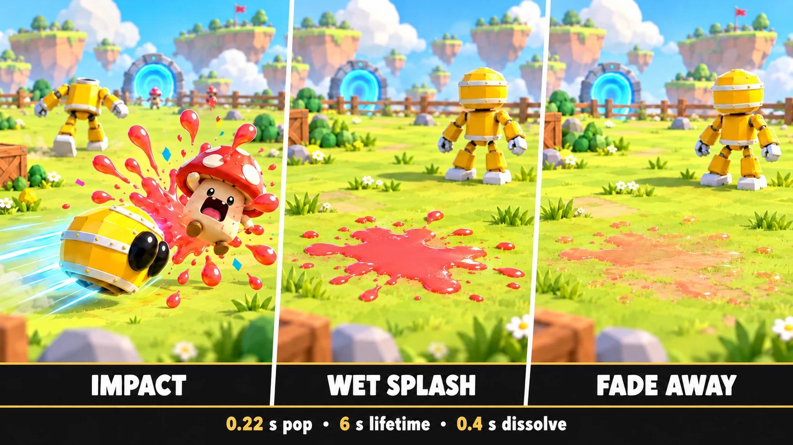
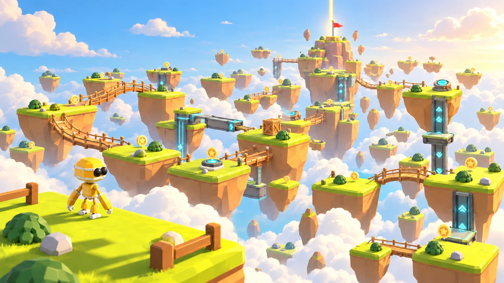
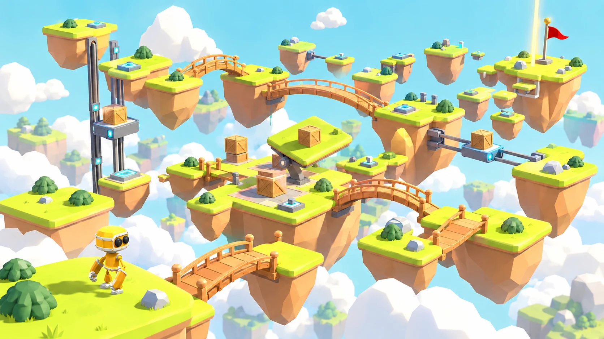
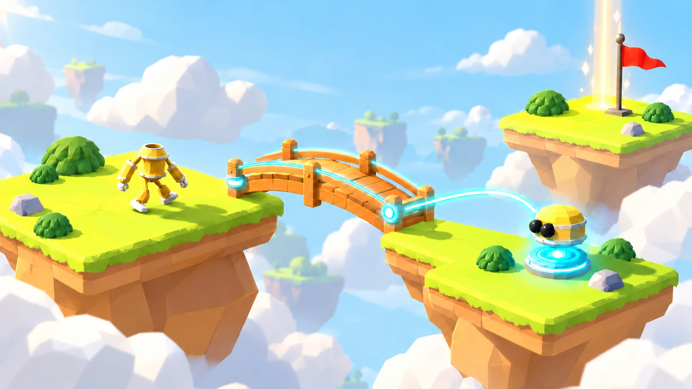
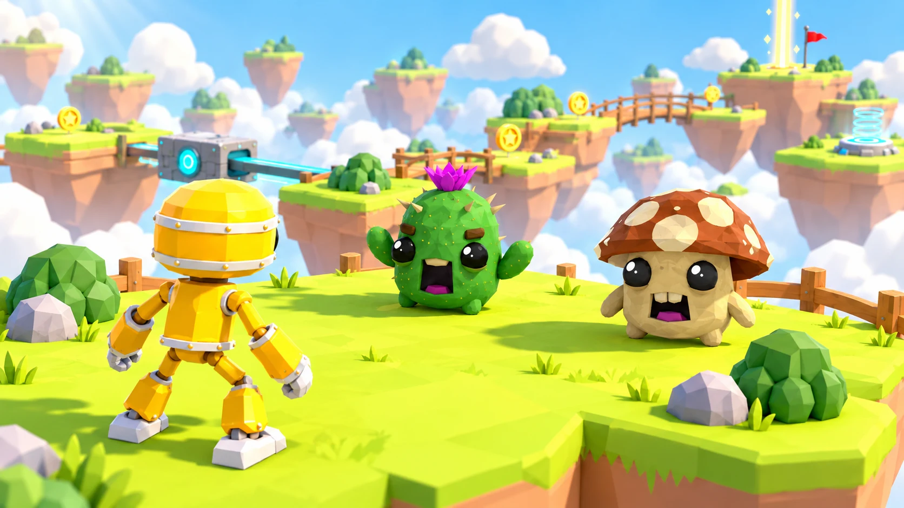

Xogot for Mac course
All the resources
in one place.
Everything from the course, free and open source.
Xogot for Mac: download
Xogot is Godot for Apple devices, with an AI agent built into the editor. Xogot for Mac is free while it is in beta.

Complete project: source project, game design document and my game dev skill
The public repo has the full game design document, the concept images and the game dev skill, all in one place.
The playable project repo will be added here when the build is finished.

From idea to game design: the pages we made along the way
1. Picking the idea
The page we used to choose the game: five original 3D worlds we could build, each with real free assets.
2. The game concept
The idea we picked: a little yellow robot crossing floating islands in a big sky, with the real assets that bring it to life.
3. The mechanics lab
Six ideas for what makes the robot special, compared side by side so we could choose its signature mechanics.

4. The game design document
The full plan for the game, with every mechanic, level, enemy and asset. Read it as a web page or open the source file on GitHub.

The concept images
The 21 images we generated to show how the game should look. Browse them on the web or download the full size files from the repo.

Get here the game dev skill
My game dev skill, version 1.9.0. Open the skill file or grab the whole folder.
A public snapshot, shared with my permission for this course.

Credits
- Quaternius, LowPoly Robot: quaternius.itch.io/lowpoly-robot
- Quaternius, Ultimate Platformer Pack: quaternius.itch.io/ultimate-platformer-pack
- Quaternius, Cute Animated Monsters: quaternius.com/packs/cutemonsters.html
- Quaternius, Animated Mech Pack (reference): quaternius.com/packs/animatedmech.html
- Juhani Junkala, 512 Sound Effects (8 bit style, CC0): opengameart.org
- Nunito Sans Project Authors, font, SIL OFL 1.1: fonts.google.com/specimen/Nunito+Sans
Quaternius terms: quaternius.com/license.html. The concept images are AI generated art based on these sources.
